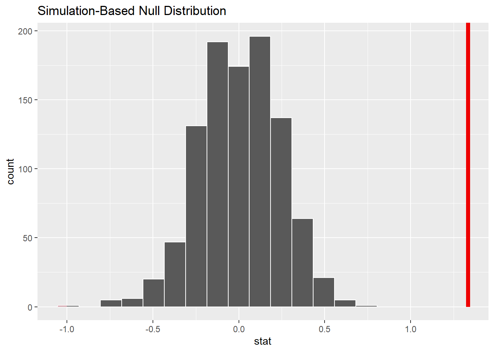

Chapter 7 Introduction to Probability
This Chapter provides examples and additional content for Lesson 8.
In this lesson, we will learn about the classical theory of probability, and how it can be used to construct measures of uncertainy of our estimates, and from there we can begin to draw inferences from the sample to the population.
7.1 Simulating Coin Flips
The first thing we’ll do is simulate 5000 fair coin flips.
Remember, this is another random process, so results will differ each time slightly
## Heads Trial Cum_Heads Pct_Heads
## 1 1 1 1 1.0000000
## 2 0 2 1 0.5000000
## 3 0 3 1 0.3333333
## 4 1 4 2 0.5000000
## 5 1 5 3 0.6000000
## 6 0 6 3 0.5000000Below, we’ll plot the results of this simulation for ease of interpretation

The thing to notice (in combination with the table of results above the plot) is that eventually the proportion of heads versus tails approaches 50%, but it does not start out that way.
In other words, for a fair coin toss sequence, the trials (tosses) are independent, which means that for any given toss of the coin, the chance of a head or tail is 50%. But, that’s not the same as saying that you’ll get equal numbers of heads or tails for every (or any) particular sequence of multiple tosses - it’s not ‘self-correcting’ in any other way than sheer weight of numbers. So, eventually over enough trials, the sequence should start to look like 50/50 heads and tails. But, that is not the tosses ‘self-correcting’, simply that you are tossing a lot of coins. This is at the root of a number of fallacies about predicting random events, such as the Gambler’s fallacy.
7.2 Premier League Goals and the Poisson Distribution
Note, much of the inspiration and code for this section comes from: https://bookdown.org/theqdata/honors_thesis/goal-scoring-and-the-poisson-process.html
The data comes from: https://www.football-data.co.uk/englandm.php and is the EPL results for 21-22 Season
## # A tibble: 6 × 107
## Div Date Time HomeTeam AwayTeam FTHG FTAG
## <chr> <dttm> <dttm> <chr> <chr> <dbl> <dbl>
## 1 E0 2021-08-13 00:00:00 1899-12-31 20:00:00 Brentford Arsenal 2 0
## 2 E0 2021-08-14 00:00:00 1899-12-31 12:30:00 Man United Leeds 5 1
## 3 E0 2021-08-14 00:00:00 1899-12-31 15:00:00 Burnley Brighton 1 2
## 4 E0 2021-08-14 00:00:00 1899-12-31 15:00:00 Chelsea Crystal … 3 0
## 5 E0 2021-08-14 00:00:00 1899-12-31 15:00:00 Everton Southamp… 3 1
## 6 E0 2021-08-14 00:00:00 1899-12-31 15:00:00 Leicester Wolves 1 0
## # ℹ 100 more variables: TOTG <dbl>, FTR <chr>, HTHG <dbl>, HTAG <dbl>,
## # HTR <chr>, Referee <chr>, HS <dbl>, AS <dbl>, HST <dbl>, AST <dbl>,
## # HF <dbl>, AF <dbl>, HC <dbl>, AC <dbl>, HY <dbl>, AY <dbl>, HR <dbl>,
## # AR <dbl>, B365H <dbl>, B365D <dbl>, B365A <dbl>, BWH <dbl>, BWD <dbl>,
## # BWA <dbl>, IWH <dbl>, IWD <dbl>, IWA <dbl>, PSH <dbl>, PSD <dbl>,
## # PSA <dbl>, WHH <dbl>, WHD <dbl>, WHA <dbl>, VCH <dbl>, VCD <dbl>,
## # VCA <dbl>, MaxH <dbl>, MaxD <dbl>, MaxA <dbl>, AvgH <dbl>, AvgD <dbl>, …Next, let’s see a few important bits of descriptive data. First, let’s calculate the total number of games in a season:
## Length Class Mode
## 380 character characterNext, how many goals in the season were there?
## [1] 1071And, what was the mean number of goals per game?
## Min. 1st Qu. Median Mean 3rd Qu. Max.
## 0.000 2.000 3.000 2.818 4.000 9.000OK, so now we have some idea of the goals per game, let’s plot the distribution of goals.

If you’ve ever seen a Poisson distribution, you’ll recognise this!
Let’s check this out. First, let’s create a table of all the matches with different numbers of goals.
## # A tibble: 9 × 2
## TOTG ActualMatches
## <dbl> <int>
## 1 0 22
## 2 1 65
## 3 2 88
## 4 3 81
## 5 4 60
## 6 5 43
## 7 6 17
## 8 7 3
## 9 9 1Let’s pull some stats of the Total Goals variable which well help us in a second.
## min Q1 median Q3 max mean sd n missing
## 0 2 3 4 9 2.818421 1.626359 380 0Importantly, because the Poisson distribution is described only by its mean, the first and most basic check we can do is whether the mean and the variance of the variable are the same (or at least very close). We already have the mean above (2.82), but what is the variance?
## [1] 2.645042This is not exactly the same, but good enough to be going on with.
So, it seems to me at least that we can use the Poisson distribution to at least somewhat accurately describe the probability of occurance of a given number of total goals scored in a premier league game, for this season at least.
The first thing I am going to do with that information is build a figure which compares the actual numbers of goals scored in games with the predicted numbers which would be scored if the goals scored were a perfect Poisson distribution.
Ideally, we would build the Poisson probabilities for 0-9 goals (which is the maximum number scored in 21-22). However, if you do this, you will find that the two tables (actual and predicted goals) will have different numbers of rows. This is because there were no games with 8 goals scored in 21-22, but one with 9.
This is a bit annoying, but not a big issue. What we do is build a Poisson probability distribution for 0-8 goals, and treat the final probability as that for ‘8 or more’ goals, for the purposes of drawing our figure. This isn’t strictly correct, because we have not collected up our actual goal data into that category, but we could do that if we wanted to.
Later, we’ll break this down properly, but for our showy graph here we don’t really need to do it.
## PoisProb
## 1 0.059700132
## 2 0.168260108
## 3 0.237113915
## 4 0.222762284
## 5 0.156959477
## 6 0.088475579
## 7 0.041560239
## 8 0.016733465
## 9 0.005895244So, this table of probabilities, based on the Poisson distribution, allows us to make some predictions of what we could expect.
Remembering again that there are 380 games in a season, we can see that there is a 0.16% chance of seeing 4 goals in a game, which equates to 380 x 0.16 = 60.8 games we would expect to see in a season with 4 goals.
We can check this out by creating a new table comparing actual with predicted values…
## # A tibble: 9 × 3
## TOTG ActualMatches ExpectedMatches
## <dbl> <int> <dbl>
## 1 0 22 23
## 2 1 65 64
## 3 2 88 90
## 4 3 81 85
## 5 4 60 60
## 6 5 43 34
## 7 6 17 16
## 8 7 3 6
## 9 9 1 2Remember, as you can see above, the row for ‘8’ is missing, and it goes straight to 9. So, to repeat, just take (for simplicity’s sake here) the final row of Expected Matches as meaning ‘2 games with 8 or more goals’
Anyway, it’s pretty scarily close! E.g. in 21-22 there were 60 matches with 4 goals, and that is identical to the predicted amount (the difference with the predicted 60.8 from the probability distribution is likely a rounding error).
Let’s plot this for the big payoff:
Wow, that is pretty accurate! Remember, the ‘expected’ figures are purely drawn from the entirely theoretical Poisson distribution with a mean of 2.82. They very closely match the actual data.
To be fair though, that graph is really just a bit of show, but what we want is the ‘go’. In other words, what could we do with this information?
Well, there is a lot of money spent on sports betting. We could use this information to help us decide whether we should place a bet that there will be a game in the 22-23 season with 10 goals? - assuming that this is being written before the 22-23 season (which is true).
Remember, there were 380 games in 21-22, none of which contained 10 goals. So, for ease of thinking about this, let’s make the assumption that the PL started in 2021, and there were no games before to count (in reality, we would go back to the last time 10 goals were scored and count from there, but let’s go with this in the first instance, and we’ll expand later on, promise).
So, first, we need to calculate a new set of probabilities out to 10 goals.
## PoisProb
## 1 0.0597001317
## 2 0.1682601080
## 3 0.2371139154
## 4 0.2227622837
## 5 0.1569594775
## 6 0.0884755792
## 7 0.0415602392
## 8 0.0167334647
## 9 0.0058952437
## 10 0.0018461421
## 11 0.0005203206
## 12 0.0001333166So, the number we want is the second-last probability: 0.00052.
This is because the table starts from the probability of 0 goals.
This means we can expect a game with 10 goals to happen every 1923 games
Calculate this by dividing 1 by the probability.
So, given there are 380 games per season, you would expect a game with 10 goals to happen once every 5 seasons.
So, if I started counting from the 21-22 season, the answer is NO, I would not bet on there being a game with 10 goals in the 22-23 Premier League season.
But, let’s add some (pretty obvious) further context, as of November 2022, there have been 5 games in the history of the Premier League where 10 goals have been scored (and 1 with 11).
The Premier League has been going since 1992, and so far in Nov 22 there have been…30 seasons. So, we are probably due one.
AND, the last game with 10 goals was in 2013 (Man Utd 5, West Brom 5)
So, I reckon we are definitely-maybe-probably due one.
By the way, as of the start of the 22-23 season, there had been 21 matches with 9 goals. We would expect given our Poisson distribution that a game with 9 goals should happen every 1.4 seasons, meaning over 30 seasons we would expect…. 21.
7.2.1 2023 Update
So, the above example is totally unchanged (other than some typo corrections and nicer wording) from when I originally coded it in 2022. The million dollar question: was there a game with 10 goals in the 22-23 season…?
The answer is no, there wasn’t. But there were two with 9! Luckily I am not a betting man. I do think we are due one, so this season (2024) is probably a good bet, but as of January 20th 2024, we still haven’t had one… Unless of course you think something has fundamentally changed about the premier league in recent years, changing the probability of goals (and thus suggesting recent seasons are drawn from a Poisson distribution with different characteristics than past ones), which is in fact an interesting question in its own right…
7.3 Birth Weight and the Normal Distribution: Brief Example
Let’s consider UK births in 2020, since they’re a subject close to my heart, as my son was born that year.
Looking online, one can pull down the distribution of UK birthweights in 2020, available from the UK ONS website, and which are reported in 500g ‘bins’.
We can use these numbers to create a chart, and see what it looks like, inspired by David Spiegelhalter’s originals, which are available on his Github page.
Spiegelhalter’s Github can be found here: https://github.com/dspiegel29/ArtofStatistics
## [1] 3345.263## [1] 577.7594
The first number is the mean, the second is the standard deviation.
What you can see here is, just using the real data from 2020 UK birthweights, it looks very much like what is called a ‘normal distribution’, or what you might have heard called a ‘bell curve’. We can almost certainly treat any given child’s birthweight as if it was a random variable drawn from a normal distribution, with a mean and standard deviation that is given by the empirical data here (3345.263 and 577.7594 respectively).